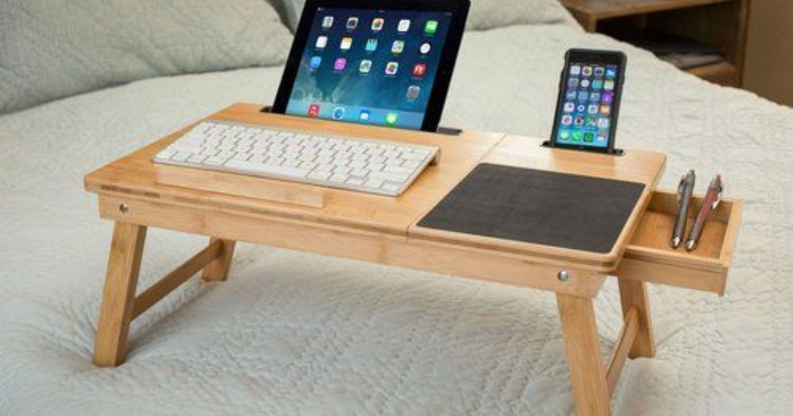

Uvek sam važio za onog u društvu koji „zna sa kompjuterima”. Kad nekome treba da se instalira sistem, sredi profil ili sredi slika u Photoshop-u — zovu mene. Zato je delovalo potpuno prirodno da na početku četvrte godine srednje nađem neki mali honorarni posao preko interneta. Par sati kucanja ili uređivanja sadržaja dnevno, kaplje džeparac, a ja radim kad hoću i odakle hoću. Zvučalo je kao san.
Međutim, taj san je trajao tačno tri dana.
Faza 1: „Ja sam sam svoj gazda” (Rad iz kreveta)
Prvi zadatak je bio da uredim i prenesem seriju tekstova i slika u jedan Cloud sistem za lokalnog klijenta. Rok: nedelju dana. Umesto da sednem za radni sto, ja sam zgrabio laptop, zavalio se u krevet u pidžami, pustio seriju na drugom ekranu i počeo da radim.
Osećaj je bio vrhunski — bar prva dva sata. Ali onda krene skrolovanje na telefonu („samo da vidim jednu stvar”), pa pauza za užinu, pa serija postane zanimljivija od tabele... I tako prođe ceo dan. Posao od dva sata razvukao se na sedam sati polurada. Do srede sam bio ubeđen da „stižem sve”, a zapravo nisam završio ni trećinu.
„Niko ti ne kaže da je rad od kuće najteži jer nema nikoga da te opomene. Kada si sam svoj menadžer, ako nemaš samodisciplinu, najgori si šef kog možeš da imaš.”
Faza 2: Estetika kafića i drama sa baterijom
Da bih prekinuo lenjost kod kuće, odlučio sam da budem pravi „digitalni nomad”. Spakovao sam laptop i otišao u kafić u gradu. Izgledao sam sebi brutalno profesionalno — kafa na stolu, laptop otvoren, slika za Story napravljena.
A onda je krenuo raspad. Prvo, baterija na laptopu je pala na 15%, a jedina slobodna utičnica bila je iza stola gde je sedelo četvoro nepoznatih ljudi. Drugo, Wi-Fi u kafiću je trajao po 30 minuta pa se tražila ponovna prijava, a slanje papirnih priloga klijentu preko nezaštićene mreže trajalo je večnost. Šlag na tortu: klijent me zove na telefon da pita zašto fajlovi nisu u odgovarajućem folderu, a oko mene grmi muzika iz kafića.
Faza 3: Šamar realnosti i lekcija za ubuduće
Rok je bio četvrtak u ponoć. U 23:30 sedeo sam u sobi sa crvenim očima, panikom u glavi i tri različite verzije fajlova na desktopu od kojih se jedna misteriozno preklopila jer nisam čuvao verzije na Cloud-u. Uspeo sam da pošaljem uz izvinjenje, ali sam shvatio jednu stvar: **to što umem da koristim telefon i komp ne znači da znam kako se radi.**
Nakon tog prvog „vatrenog krštenja”, promenio sam pristup:
- Radni sto je radni sto: Nema više radnog laptopa u krevetu. Kad sednem za sto, radim 45 minuta bez telefona na stolu, pa napravim pauzu.
- Organizacija u tri klika: Svoju folder strukturu spremim PRE nego što počnem da radim, a ne kad nastane haos.
- Odvojeno privatno i poslovno: Klijentu se odgovara u radno vreme, a ne iz izlaska u 11 uveče.
Sloboda se zarađuje navikama
Danas i dalje radim sitne projekte uz školu, ali više nisam talac sopstvene neodgovornosti. Digitalni rad jeste sloboda, ali ta sloboda ne dolazi iz pidžame i skrolovanja — već iz spoznaje kako da upravljaš svojim vremenom, alatima i obavezama.